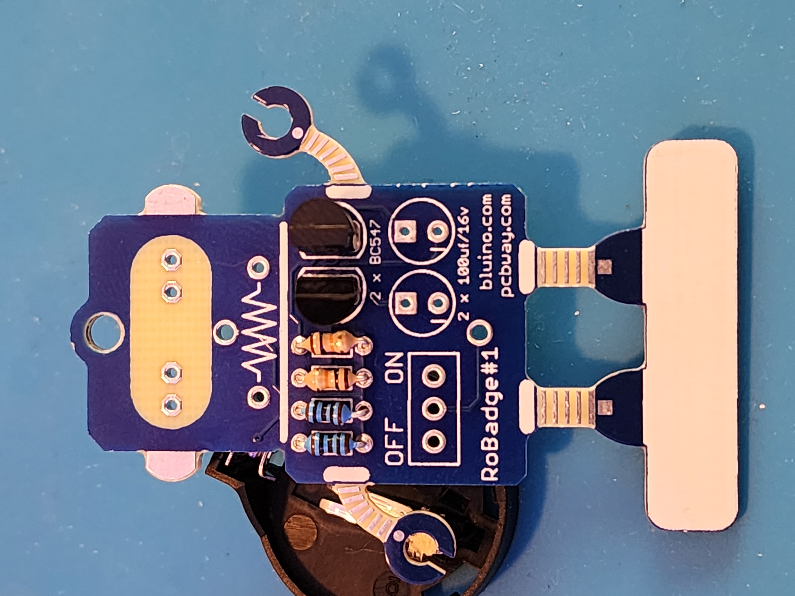
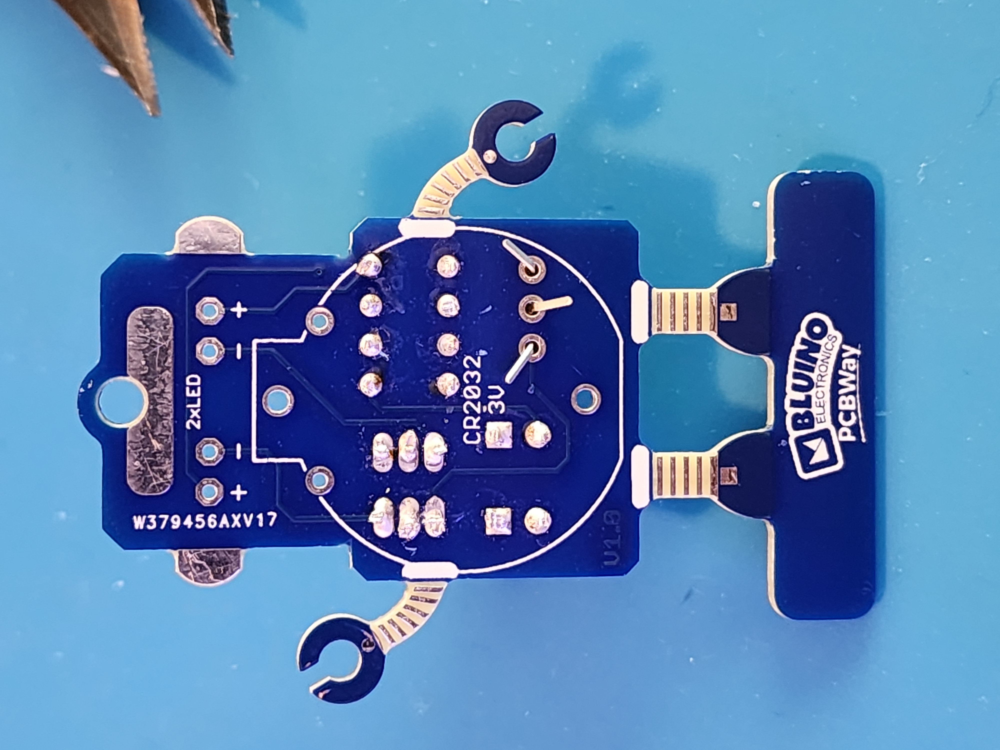

Step 1: Gather Your Components
Make sure you have all the components ready:
- 1 x 2032 Battery
- 1 x Battery Holder
- 2 x LEDs
- 1 x Switch
- 2 x 100 Ohm Resistors
- 2 x 10k Ohm Resistors
- 2 x 100uf Capacitors
- 2 x BC 547B Transistors
Step 2: Place 10k Resistor
Take the resistor and bend the legs in a U shape, and place in the 10k slots
Step 3: Solder Legs
Take the legs and spread them to lock them in place. Solder the legs. Once done, trim excess
Step 4: Place 100 Resistor
Take the resistor and bend the legs in a U shape
Step 5: Solder 100 Resistor
Take the legs and spread them to lock them in place. Solder the legs. Once done, trim excess
Step 6: Get BC 547B Transistors
Step 7: Place BC 547b Transistors
Make sure the flat sides of the transistors are facing toward each other. Solder legs and trim excess.
Step 8: Place 100uf Capacitors
Make sure the negative sides of the capacitors are facing down. The negative legs are shorter and on the side of the capacitor there is a stripe.
Step 9: Place Switch
Place the switch you will need to spread the legs to keep it in place.
Step 10: Place LEDs
Place the leds with the shorter or negative legs toward the center. Check the image below to make sure they are facing the right way.
Step 11: Place LEDs
Place the leds with the shorter or negative legs toward the center. Check the image below to make sure they are facing the right way.
Step 12: Place Battery Holder
Place the holder with the sticking out portion of the circle facing up.
Done!